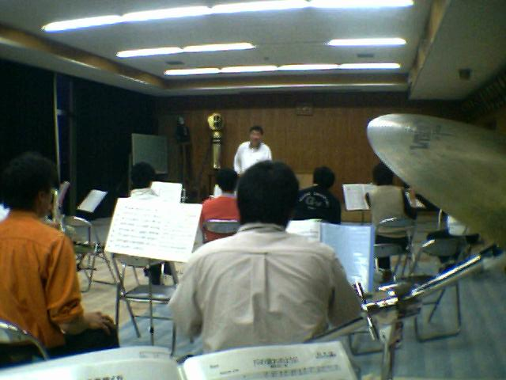
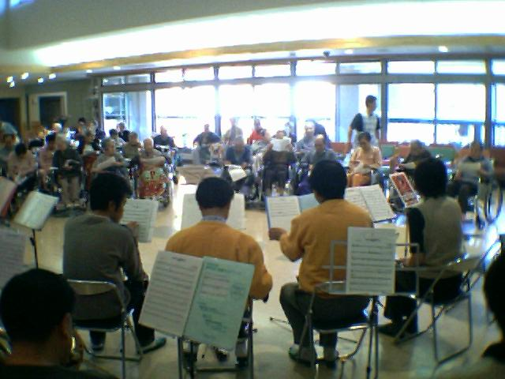
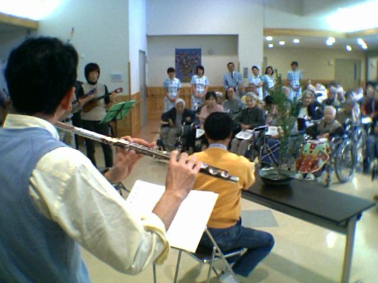
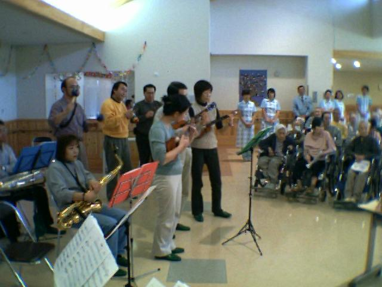

２００３年１１月２日
ご縁があって、全国で活躍されているアンサンブルグループあんさんぶる「響き」さんの演奏会に参加させていただきました。
あんさんぶる「響き」のみなさんは、主にＮＴＴへお勤めの方で構成されるグループで、平成１１年より活動されていらっしゃるそうです。
北海道、首都圏、金沢、大阪、広島と、日本各地から音楽好きのメンバーが集まり、年に一度、メンバーの地元を巡回する形で、各地の福祉施設で演奏会を開いていらっしゃいます。
我が上田市消防団音楽隊の翠川楽長も元ＮＴＴマンで、あんさんぶる「響き」のメンバーとは旧知の仲とのこと。そこで今回、翠川楽長の地元を訪問するかたちで、今回の演奏会が企画されたわけです。
前日の練習・・・
いつだったか、かなり前、楽長から「１１月１日と２日は俺のためにあけておけ」と言われてただけで、今回の趣旨はこの場で初めて知りました。
ふだん、譜面ガチガチでアドリブの効かないしおいり。でも今回、パーカスはほとんどアドリブ勝負らしい。ひゃー。
ベースの譜面を見ながら、途方に暮れるしおいり。でもメンバーさんはさすが、年に一度の演奏なのに、初見でスラスラ合わせちゃう。焦るー！ |
|
 |
演奏の会場は別所温泉の特別養護老人ホーム「長寿園」。昨年、移転オープンしたばかりのすばらしい施設です。
練習不足を心配しつつ、大勢のお年寄りを前に演奏への期待が膨らみます。
だって、配布したプログラムにある「信濃の国」の歌詞を見て、早くも口ずさむおばあちゃんがいらっしゃるんですもの！ |
|
 |
演奏途中のアトラクション。
クラリネットの荒蒔さんはなんと生け花のお師匠さん！
即興で「長寿園の秋」と題した生け花を披露してくださいました。
う～む、生け花！しおいりもこういう高尚な趣味にチャレンジしてみたい！ |
|
 |
その間、バックでは芸達者なメンバーのみなさんによるハワイアン演奏が行われました。
しおいりは司会の大田原さんがウクレレを演奏する姿にウットリ（*^o^*）
う～む、ウクレレ！しおいりもこういうイカした芸を身に付けたい！ |
|
 |
みなさん、ほんとうにお疲れさまでした。
あんさんぶる「響き」のみなさん、信州の秋は満喫していただけたでしょうか？
しおいりのショボいドラムで、ご迷惑をおかけしたと思います。
精力的に各地でボランティア演奏をされるみなさんの真摯な姿勢を感じ、同じ音楽を演奏する者のひとりとして、とても大きな刺激を得ることのできた一日でした。
またいつか、ご一緒できる機会があるといいなー！
次回は・・・ぜひ、ぜひ、「ダイコンバンド」の鳴り物にも参加させてくださいね！
あ、そのためには・・・しおいり、もっともっと修行せよ！ですねー。
ありがとうございました！
≫あんさんぶる「響き」さんのサイト
≫西田さん（編曲・指揮・クラリネット）のサイト「マコネンの気ままな茶の間」
【おわり】 |
|
{kind=link}
{kind=link}
{kind=link}
{kind=link}